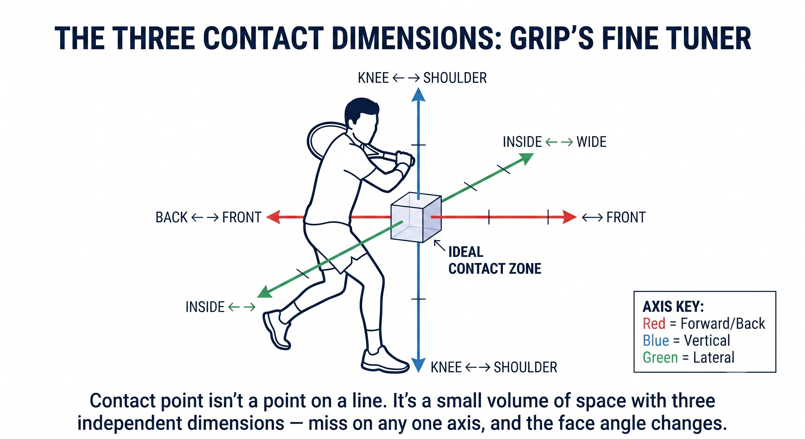

Chương 3: Sự Chính Xác
(Bản dịch tiếng Việt của Chapter 3 trong Sổ Tay Quần Vợt Thống Nhất)
Vị Trí Điểm Tiếp Xúc và Kiểm Soát Mặt Vợt
Cầm vợt đặt nền cơ bản. Điểm tiếp xúc tinh chỉnh góc mặt vợt tại thời điểm va chạm.
Cầm vợt cho bạn góc mặt vợt tại một điểm. Điểm tiếp xúc di chuyển điểm đó dọc theo cung vung.
— Henry Phạm

Hình 3.1
Vì Sao Điểm Tiếp Xúc Là Bộ Tinh Chỉnh
Mọi cú vung đều là một đường cung, và góc mặt vợt thay đổi liên tục khi cây vợt di chuyển dọc theo cung đó:
– Đầu cung (thấp, phía sau bạn): mặt vợt mở, hướng lên và ra ngoài.
– Giữa cung (phía trước, ngang hông): mặt vợt trung lập, gần như thẳng đứng.
– Cuối cung (cao, qua khỏi chân trước): mặt vợt khép, hướng xuống.
Cầm vợt quyết định vùng trung lập nằm ở đâu. Điểm tiếp xúc quyết định bạn gặp bóng ở chỗ nào trong cung vung đó.

Hình 3.2
Quy Tắc Điểm Tiếp Xúc
Với bất kỳ cầm vợt nào, góc mặt vợt bạn tạo ra tại va chạm phụ thuộc hoàn toàn vào chỗ bóng gặp cung vung của bạn.
Nguyên Lý Cốt Lõi
Điểm tiếp xúc là bộ tinh chỉnh. Cầm vợt là cài đặt thô; điểm tiếp xúc là điều chỉnh tinh.
Cách Cầm Vợt Dịch Chuyển Vùng Trung Lập
Mỗi cầm vợt đặt vùng trung lập của nó tại một điểm khác nhau dọc theo cung vung.

Hình 3.3
Mẹo Huấn Luyện
Người cầm Semi-Western đánh muộn thường bị lỗi vào lưới. Người cầm Western để bóng đến ngang mình cũng bị lỗi vào lưới. Người cầm Eastern đánh vội thường bị lỗi bay dài. Chính lỗi đó cho bạn biết điểm tiếp xúc của bạn đang lệch khỏi vùng lý tưởng của cầm vợt theo hướng nào.
Ba Chiều Của Điểm Tiếp Xúc
Điểm tiếp xúc không phải một con số duy nhất — đó là một tọa độ ba chiều, và mỗi chiều ảnh hưởng đến mặt vợt theo cách riêng.
Cửa Sổ Tiếp Xúc Theo Từng Loại Pha Bóng
Mỗi loại pha bóng trong quần vợt có điểm tiếp xúc lý tưởng riêng và một mức dung sai lỗi riêng.

Hình 3.4
Cách Sửa Lỗi Điểm Tiếp Xúc
Khi đã biết lỗi của bạn đang nghiêng về hướng nào, cách sửa gần như luôn đi theo đúng một thứ tự: bước chân trước, cầm vợt sau, rồi mới đến thời điểm khởi động vung.
Bài Tập: Tìm Điểm Tiếp Xúc Lý Tưởng Của Bạn
Bài Tập "Gọi Tên" — Cùng Đối Tác Hoặc Máy Bắn Bóng
1. Nhờ đối tác bắn 20 quả bóng vào forehand. Trước mỗi quả, hãy gọi to vị trí bạn dự đoán mình sẽ tiếp xúc: "sớm," "lý tưởng," "muộn," "cao," hoặc "thấp."
2. Sau khi đánh, đối tác xác nhận lại: "đúng rồi" hoặc "thật ra là muộn đó."

Hình 3.5
3. Sau 20 quả, bạn nên tự chẩn đoán đúng khoảng 90% số lần.
4. Lặp lại với backhand, rồi trộn cả hai bên.
5. Nâng cao hơn: gọi thêm "inside" hoặc "outside" để theo dõi cả vị trí ngang.
Bài Tập "Bóng Ma" — Không Cần Bóng Thật
– Thực hiện một cú vung không bóng và đóng băng đúng lúc tiếp xúc. Nhìn xem mặt vợt đang chỉ về hướng nào.
– Tự hỏi: mặt vợt có đang thẳng đứng không? Hơi khép không? Chân trước của mình đang ở đâu?
– Điều chỉnh vị trí chân cho đến khi mặt vợt rơi đúng vào chỗ bạn muốn.
– Lặp lại 50 lần. Bài tập này huấn luyện khả năng cảm nhận bản thể về điểm tiếp xúc lý tưởng của bạn.
Bạn không sửa góc mặt vợt bằng cổ tay. Bạn sửa nó bằng chân, rồi đến điểm tiếp xúc, rồi mới đến cầm vợt.
CHÂN DI CHUYỂN ĐIỂM TIẾP XÚC. CẦM VỢT ĐẶT VÙNG. ĐIỂM TIẾP XÚC TINH CHỈNH MẶT VỢT.
Những Điều Cần Nhớ
– Nắm rõ vùng tiếp xúc lý tưởng của cầm vợt bạn: chiều sâu, độ cao, và vị trí ngang.
– Di chuyển chân để đưa bóng vào đúng vùng đó — đừng cố với tay ra đánh.
– Tiếp xúc muộn khiến mặt vợt khép lại và đưa bóng vào lưới; tiếp xúc sớm khiến mặt vợt mở ra và đưa bóng bay dài.
– Luyện tập: gọi to điểm tiếp xúc dự kiến trước mỗi quả bóng, liên tục 20 quả.
– Kiểm tra bằng cú vung không bóng: đóng băng tại thời điểm tiếp xúc, kiểm tra góc mặt vợt, kiểm tra vị trí chân trước.
Chương Này Dẫn Đến Đâu
Chương này hoàn tất biến số R (Racket — Vợt) trong phương trình CORE: cầm vợt (Chương 2) cộng với điểm tiếp xúc (Chương 3) bằng góc mặt vợt bạn truyền tải được. Chương 4 sẽ nói về thứ mà góc mặt vợt đó mang lại — nó quyết định khoảng 80% hướng đi của bóng. Chương 5 và 6 nói về năng lượng: vung nạp và độ căng cơ. Chương 7 tích hợp tất cả những điều đó vào vòng lặp CORE hoàn chỉnh.